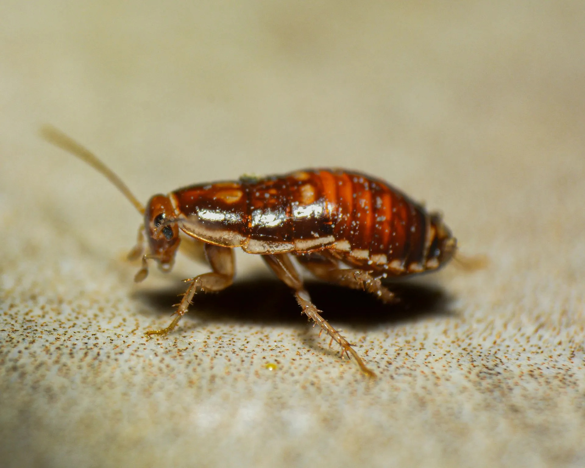
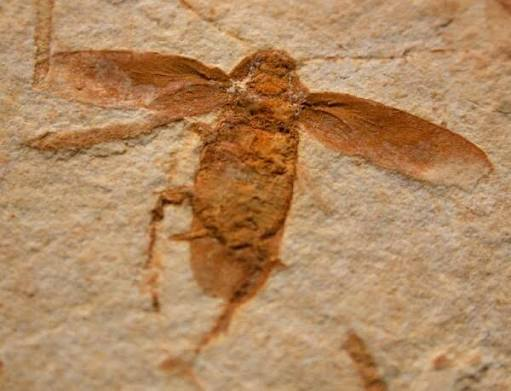
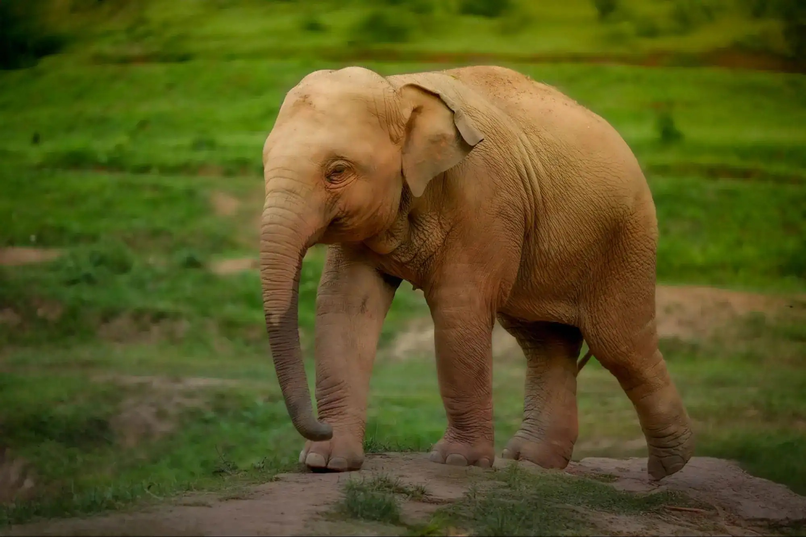
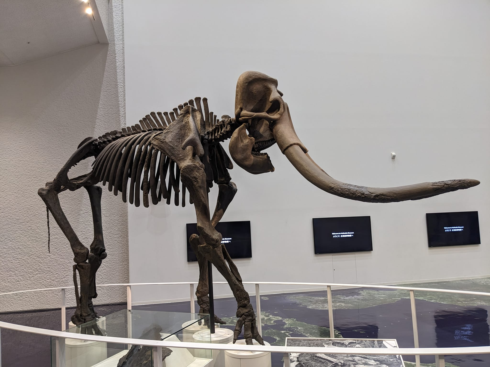
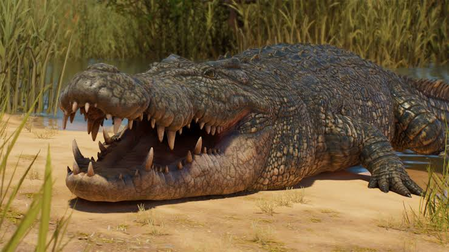
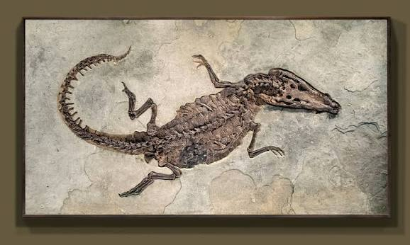
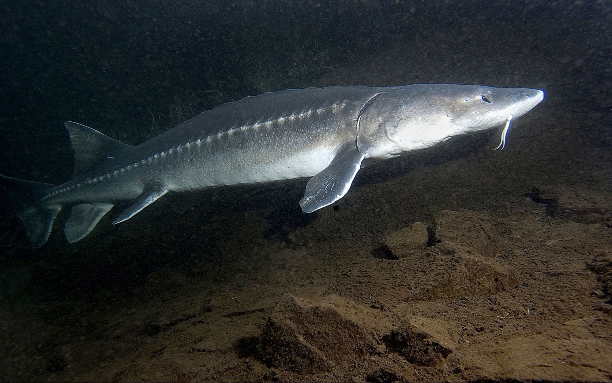
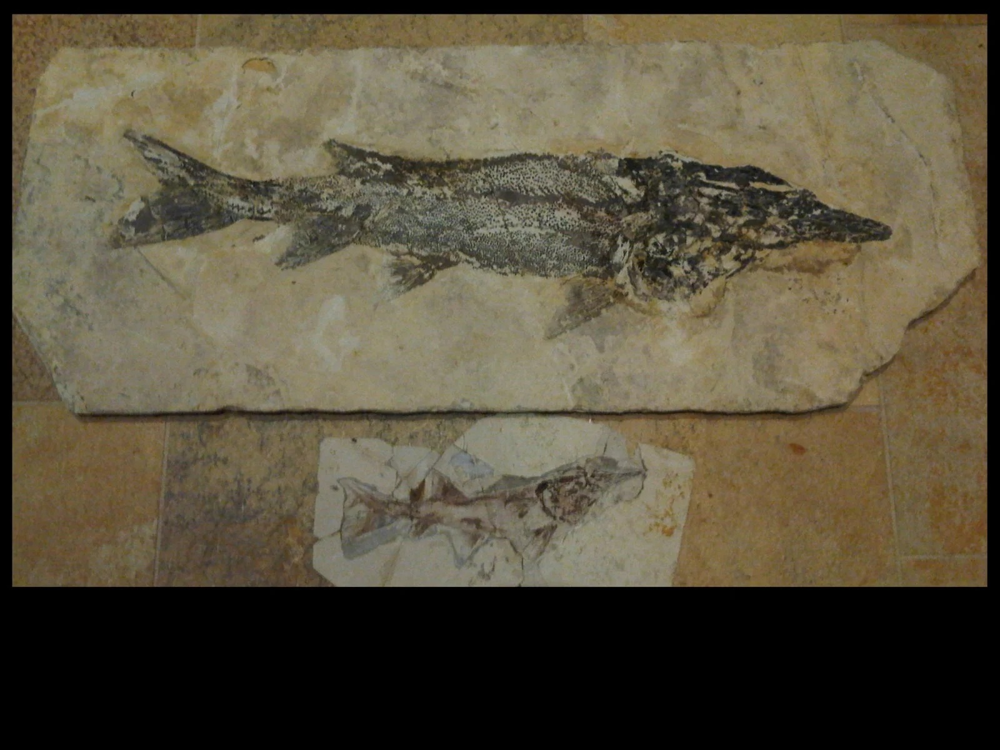
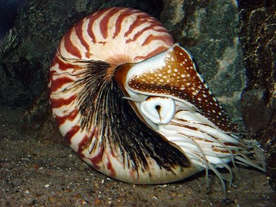
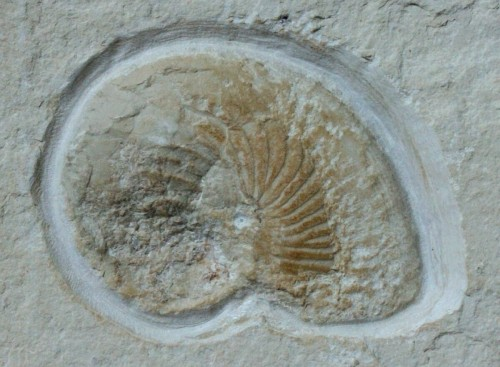

1.แมลงสาบ (Cockroach)
วิวัฒนาการ : ประมาณ 300 ล้านปีก่อน
ยุคที่ถือกำเนิด : คาร์บอนิเฟอรัส
บรรพบุรุษที่เก่าแก่ที่สุด : สัตว์ในกลุ่ม Blattoptera (แบลตต็อพเทอรา)
ลักษณะ : ลำตัวยาวรีเป็นรูปไข่เป็นสีดำหรือสีน้ำตาลเข้ม มีส่วนหัวซ่อนอยู่ใต้อก มีหนวดยาวคล้ายเส้นด้าย ขายาวมีหนามคลุม ตัวเต็มวัยมีทั้ง มีปีกและไม่มีปีก เป็นแมลงที่หากินตามพื้นดินเป็นหลักตามที่มืด ๆ หรือในเวลากลางคืน เป็นหนึ่งในแมลงที่เก่าแก่ชนิดหนึ่งของโลก จากการบันทึกซากฟอสซิลของแมลงสาบที่ได้มีการค้นพบ


2.ช้าง (Elephant)
วิวัฒนาการ : ประมาณ40 ล้านปีก่อน
ยุคที่ถือกำเนิด : ซีโนโซอิก
บรรพบุรุษที่เก่าแก่ที่สุด : Eritherium (เอริเธียเรียม) และ Moeritherium (มอริเทอเรียม)
ลักษณะ : สัตว์เลี้ยงลูกด้วยนมขนาดใหญ่ ปัจจุบันมีอยู่ 3 สปีชีต์ คือช้าง แอฟริกา ช้างป่าแอฟริกา ช้างเอเชีย ลักษณะเด่นของช้าง ลักษณะเด่นของช้างทุกชนิดได้แก่ งวงยาว หูกางขนาดใหญ่ ขาใหญ่ และผิวหนังที่หนาแต่ละเอียดอ่อน และช้างยังเป็นสัตว์บกขนาดใหญ่ที่สุด วิวัฒนาการขวิวัฒนาการของข้างเริ่มต้นจากสัตว์เลี้ยงลูกด้วยนม ขนาดเท่าหมูที่ชื่อว่า Moeritherium


3.จระเข้(Crocodile)
วิวัฒนาการ : ประมาณ 200 ล้านปีก่อน
ยุคที่ถือกำเนิด : ไทรแอสสิก
บรรพบุรุษที่เก่าแก่ที่สุด : สัตว์ในกลุ่ม Crurotarsi (ครูโรทาร์ซี)
ลักษณะ :เป็นสัตว์เลื้อยคลานขนาดใหญ่ที่สุดในโลก เมื่อโตเต็มวัย อาจมีความยาวถึง 9 เมตร มีอายุยืนถึง 70 ปี เป็นสัตว์เลือดเย็น มีหัวใจครบ 4 ห้องแต่ไม่สมบูรณ์ สมองเจริญเติบโตดีกว่าสัตว์เลื้อยคลานชนิดอื่น ถูกแบ่งออกเป็น 3 สกุล คือ จระเข้ เอลิเกเตอร์ และตะโขง จากการค้นพบเปิดเผยว่า สัตว์ดึกดำบรรพ์ที่กลายพันธุ์มาเป็นจระเข้ นั้นก็คือ Batrachopus grandis


4.ปลาสเตอร์เจียน (Sturgeon)
วิวัฒนาการ : ประมาณ 145 ล้านปีก่อน
ยุคที่ถือกำเนิด : ครีเตเชียส
บรรพบุรุษที่เก่าแก่ที่สุด : ปลาในตระกูล Acipenseridae ( อะซิเพนเซอริดี)
ลักษณะ : มีรูปร่างคล้ายปลาฉลาม มีหนามแหลมสั้น ๆ บริเวณหลัง หัว และเส้นข้างลำตัวไว้เพื่อป้องกันตัว มีหนวดทั้งหมด 2 คู่อยู่บริเวณปลายจมูก ปลายหัวแหลม ปากอยู่ใต้ลำตัว ลำตัวไม่มีเกล็ด ภายในปากไม่มีฟัน ตามีขนาดเล็ก ซึ่งหนวดของปลาสเตอร์เจียนนี้มีหน้าที่สัมผัสและรับคลื่นกระแสไฟฟ้าขณะที่ว่ายน้ำ เนื่องจากไม่สามารถมองเห็นวัตถุที่อยู่ใต้ของลำตัวได้ มีขนาดใหญ่ได้ถึง 5 เมตรและน้ำหนักได้ถึง 600 กิโลกรัมปลาสเตอร์เจียนเป็นปลา 3 น้ำ คือสามารถอยู่ได้ทั้งน้ำเค็ม น้ำจืดและน้ำกร่อย อาจเป็นสาเหตุให้ปลาชนิดนี้มีชีวิตรอดมาถึงในปัจจุบัน แต่ในปัจจุบันก็มีโอกาสสูญพันธุ์จากการการล่านำไข่ไปทำไข่ปลาคาเวียร์ของมนุษย์


5.หอยงวงช้าง(Geoduck)
วิวัฒนาการ : ประมาณ 350 ล้านปีก่อน
ยุคที่ถือกำเนิด : ไทรแอซซิค
บรรพบุรุษที่เก่าแก่ที่สุด :สัตว์ในกลุ่ม Nautiloids (นอติลอยด์)
ลักษณะ : เปลือกแข็งม้วนเป็นวงกลมเกลียวด้านนอก ลวดลายสวยงาม ด้านในแบ่งเป็นห้องๆ และมีหนวดยาวเกือบ 100 เส้นใกล้ๆ กับปากเพื่อใช้ต่อสู้และป้องกันตัวกับพวกนักล่า หอยงวงช้าง เรียกได้ว่าเป็น ฟอสซิลที่ยังมีชีวิต (Living Fossil) ที่เก่าแก่ที่สุดชนิดหนึ่งของโลก หอยชนิดนี้แทบจะไม่มีการเปลี่ยนแปลงเลย เปลือกของหอยงวงช้างถูกยกย่องให้เป็นหนึ่งในตัวอย่างที่ชัดเจนและสมบูรณ์แบบที่สุดของ สัดส่วนทองคำ (Golden Ratio) ซึ่งปรากฎเองตามธรรมชาติ